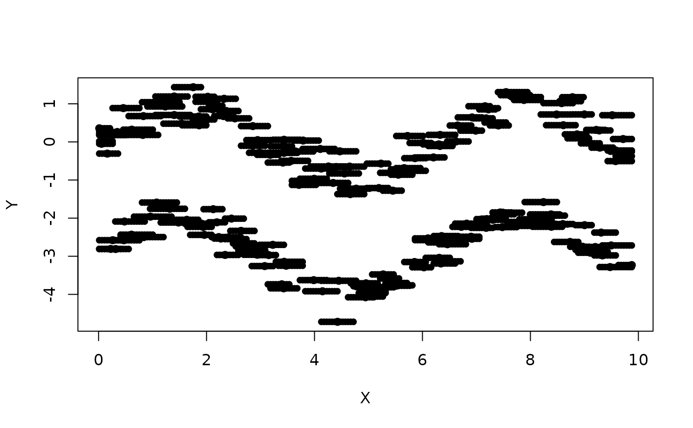

Given a matrix containing the sample, constructs a mesh.
This can be done in two ways: either computing l different equidistant x
points and assigning k different y values to each one,
chosen in a k nearest neighbors fashion or, if given a matrix of x
points (x.malla), performing the same construction over them.
Usage
mallador(data, k = 10, len = 200, x.malla)
Arguments
- data
Matrix or data frame containing the sample.
- k
Number of y values for each x point in the new mesh.
- len
Number of different x points in the new mesh.
- x.malla
Matrix of x points given by user.
Value
A matrix containing the points of the new mesh.
Each x point is repeated k times, each one with an associated y value.
This matrix has three attributes: len, k and x.malla, the last of which
is a matrix containing the different x points in the mesh.
Examples
malla <- mallador(twosines)
plot(twosines)
points(malla, pch = 19, cex = 0.8)
